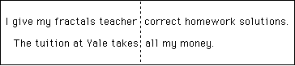
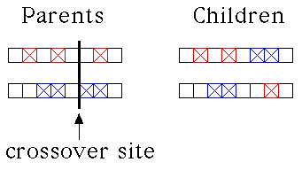

| Crossover is a method of recombining two
strings of genetic material. |
| Simplest is the single-point crossover: snip
both strings at the same location and interchange the pieces. |
| Another method, multiple-point crossover, involves recombining the strings at
several locations. We shall consider only single-point crossovers. |
| First here is an illustration of single-point corssover
using two sentences. |
|  |
| Click the picture to return. |
|
| Here is an example using the CA classifier system: |
|  |
| Here are patterns generated by the parents, both from the same
random initial distribution. Click on the small picture for a larger version in a new window. |
|
| Here are patterns generated by the children, both from the same
random initial distribution. Click on the small picture for a larger version in a new window. |
|
| Crossover allows large excursions in genotype space. It is aided by
Holland's Schema theorem: combinations of genes that increase fitness tend to be
preserved and amplified by crossover in large populations. |
Return to Genetic Algorithms and Artificial Evolution.
|